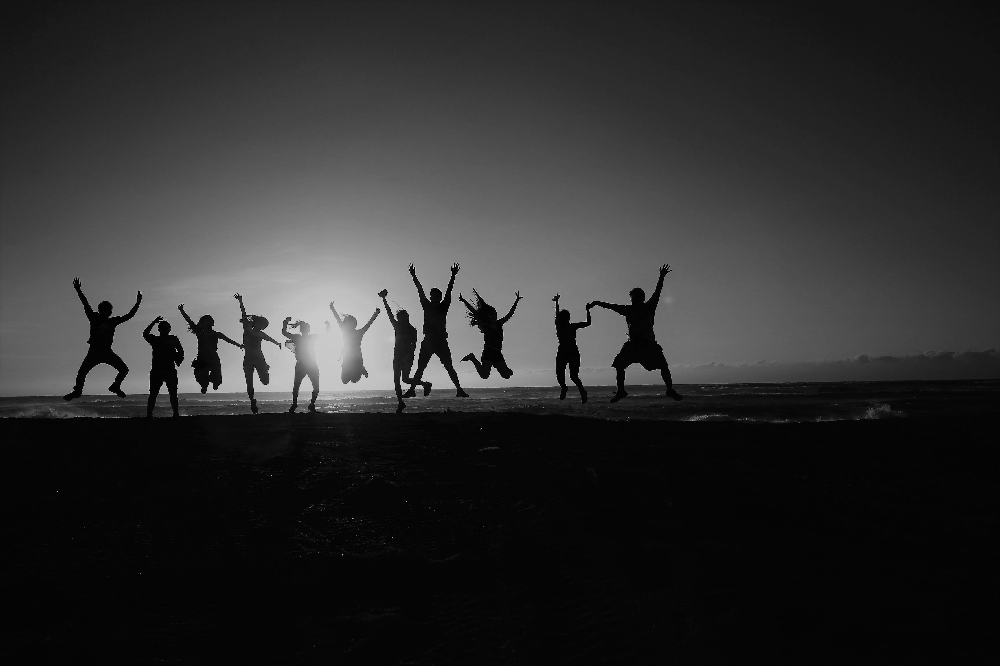

SWITCH TO DESKTOP SITE FOR BETTER EXPERIENCE
La Quote
HOME
Sigma
Fitness
Motivational
Love

La Quote
Home for Quotes
Friends
"To the world you may be just one person, but to one person you may be the world."
Friends Quotes for you
"To the world you may be just one person, but to one person you may be the world."
"There is nothing on this earth more to be prized than true friendship."
"Truly great friends are hard to find, difficult to leave, and impossible to forget."
"Friendship is the golden thread that ties the heart of all the world."
"The ornament of a house is the friends who frequent it."
"A friend is one of the best things you can be and the greatest things you can have."
"Friends are the family you choose."
"In the sweetness of friendship let there be laughter, for in the dew of little things the heart finds its morning and is refreshed."
"A good friend is like a four-leaf clover; hard to find and lucky to have."
"When the world is so complicated, the simple gift of friendship is within all of our hands."
"Friends are those rare people who ask how we are and then wait to hear the answer."
"True friends are never apart, maybe in distance but never in heart."
"Friendship is accepting a person with all their qualities—good and bad."
"It's not that diamonds are a girl's best friend, but it's your best friends who are your diamonds."
"Friendship is the only cement that will ever hold the world together."
"Friendship is so weird…you just pick a human you've met and you're like 'Yep, I like this one' and you just do stuff with them."
"There is nothing better than a friend, unless it is a friend with chocolate."
"There is nothing like puking with somebody to make you into old friends."
"A real friend is one who walks in when the rest of the world walks out."
"A friend knows the song in my heart and signs it to me when my memory fails."